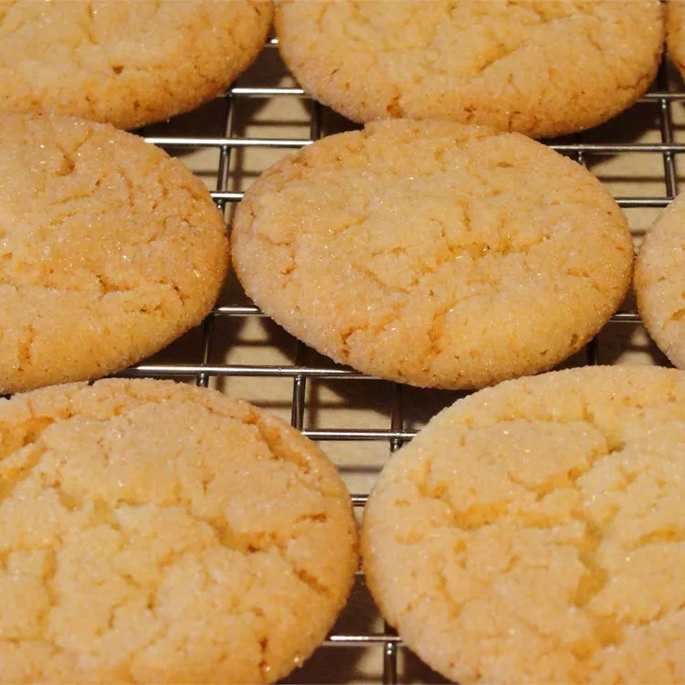

Lemon Cookies

Description
Delightful lemon flavored cookies.
Ingredients
- ¾ cup butter
- 1 cup white sugar
- 1 egg
- 2 tablespoons corn syrup
- 1 teaspoon lemon extract
- 2 cups all-purpose flour
- 1 teaspoon baking soda
- 1 teaspoon baking powder
- ½ cup white sugar
Steps
- In a medium bowl, cream together butter and 1 cup sugar until light and fluffy. Beat in egg, corn syrup, and lemon extract. Stir in flour, baking soda, and baking powder. Cover dough, and chill in the refrigerator at least 1 hour.
- Preheat oven to 325 degrees F (165 degrees C). Line a cookie sheet with parchment paper. Roll chilled dough into walnut sized balls. Roll balls in remaining sugar, and place on the prepared cookie sheet.
- Bake 12 minutes in the preheated oven, or until lightly browned.